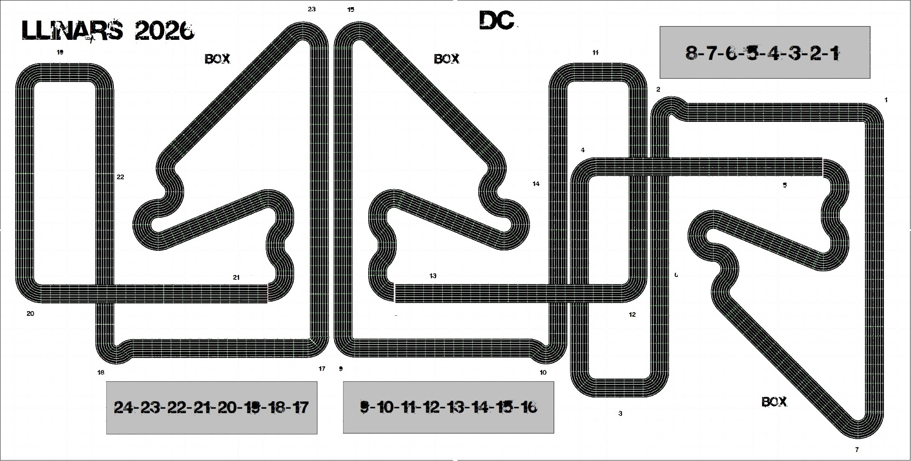

La gran resistència de slot arriba a Llinars del Vallès.
Les 24 Hores Llinars del Vallès recreen l'esperit de les grans curses de resistència.
* Horari provisional.
Un traçat exigent dissenyat per a la resistència.

Descarrega tota la documentació oficial abans d'inscriure el teu equip.
Les places són limitades.
Obrir el formulari d'inscripció →Aquests són els equips que ja han formalitzat la seva inscripció.